Evilbane official trailer
Client · Netmarble
2025.07 - 2025.08
Contribution
- 언리얼 엔진 시퀀스 기반 시네마틱 라이팅
- 샷별 분위기와 연출 의도에 맞춘 인물 라이팅 조정
- Post Process Volume을 활용한 노출, 콘트라스트, 컬러 톤 밸런스 조정
- Fog / Atmosphere를 활용한 공간감 조정
- 최종 렌더링 및 퀄리티 체크
- 카메라 구도에 맞춘 배경 요소 배치 및 환경 밀도 조정
*작업한 컷들 중 일부입니다. Selected shots from the project.
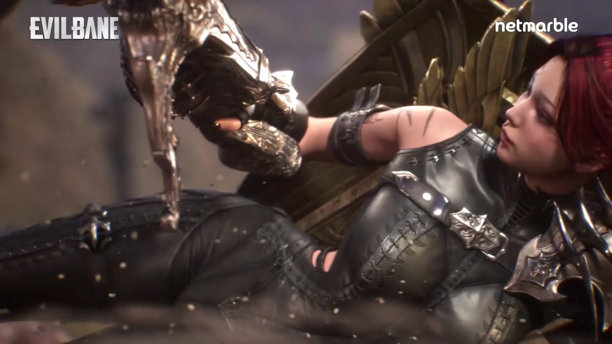
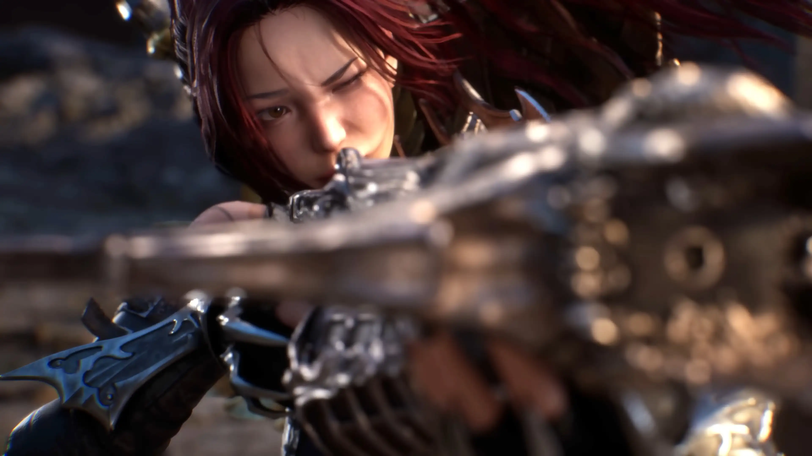
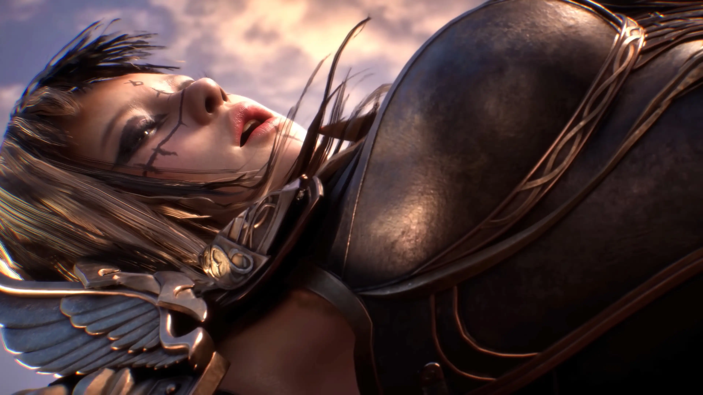
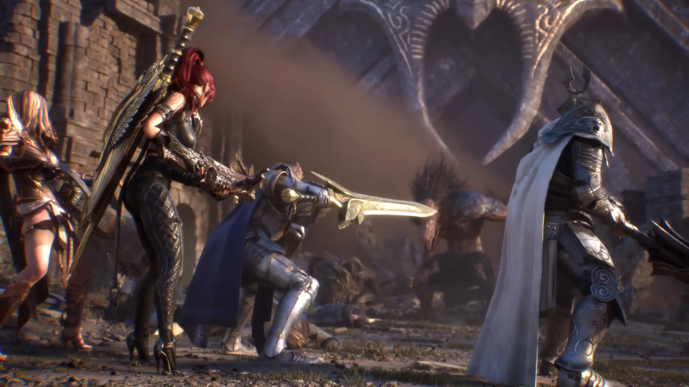
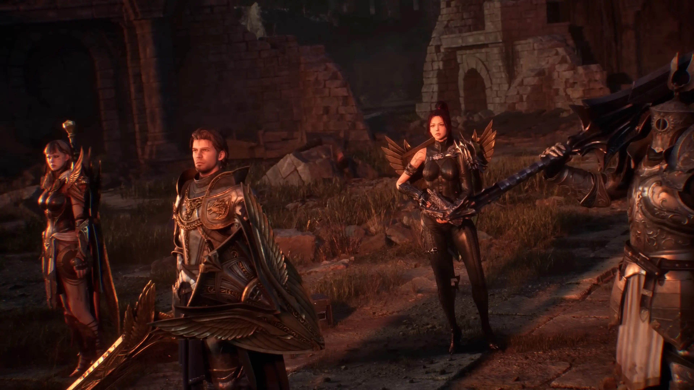
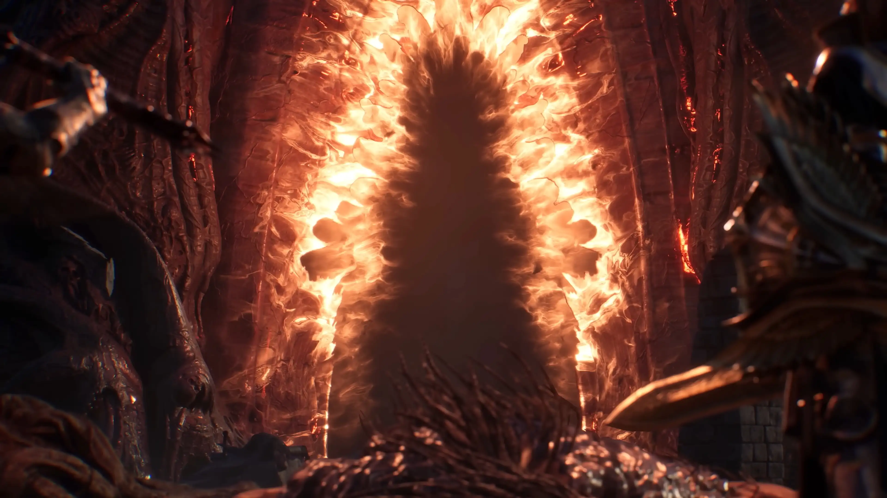
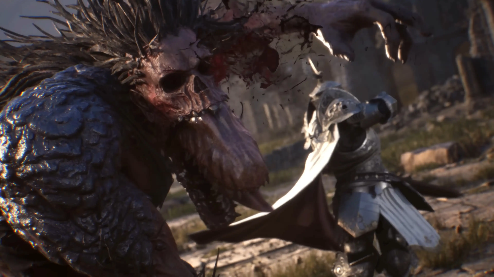
01 — Lighting Process
 01
01
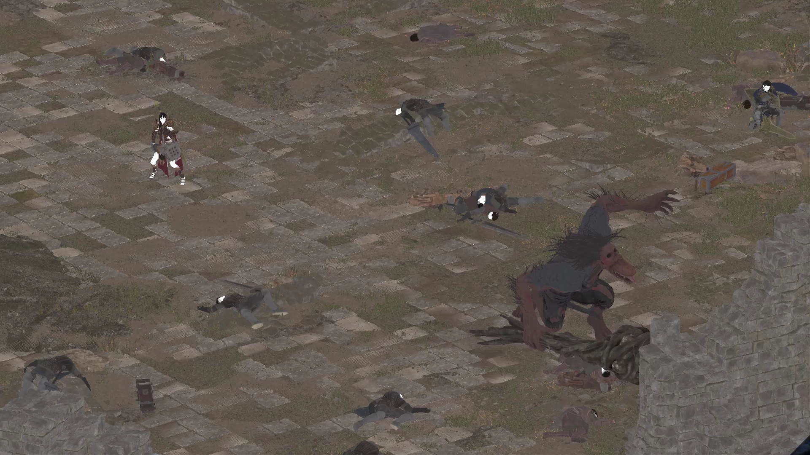
02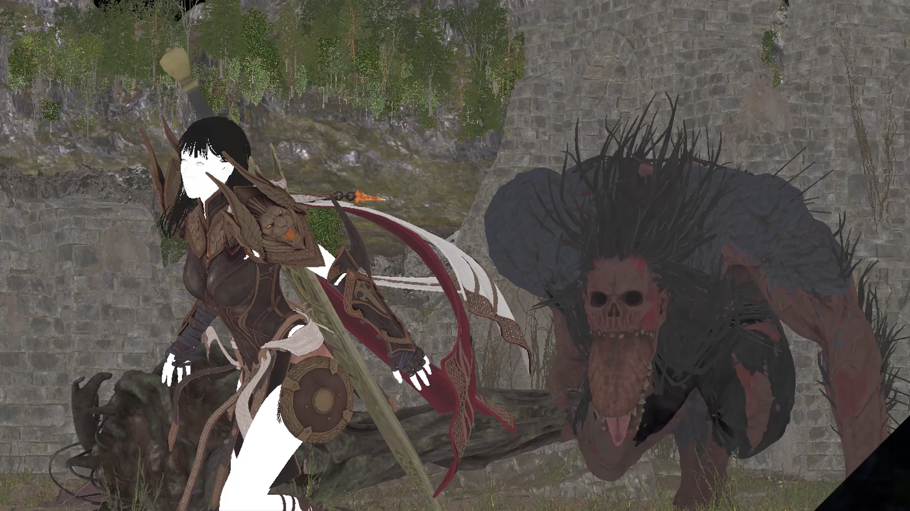
03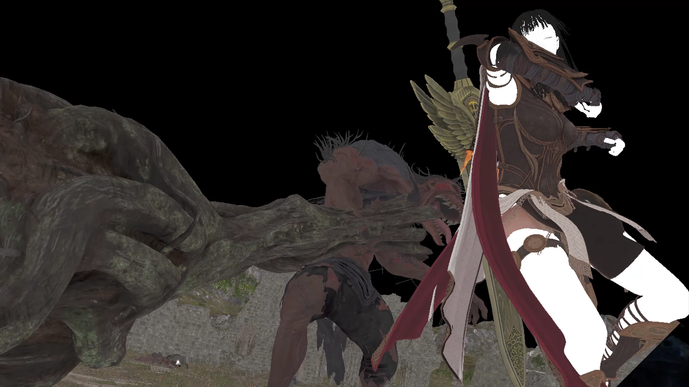
0402 — PBL & Exposure Values
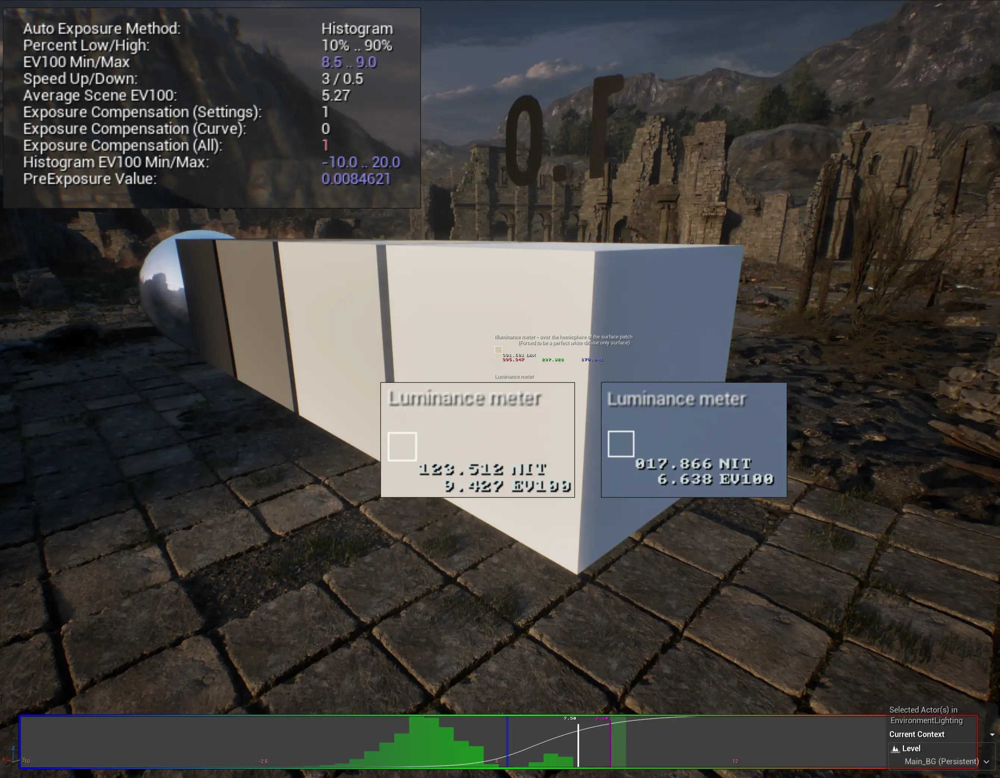
Exposure
조정
PBL physically based lighting
SUN EV 9.4 EV100 / SKY EV 6.6 EV
directional light intensity 900 / EV min 8.5 / max 9.0
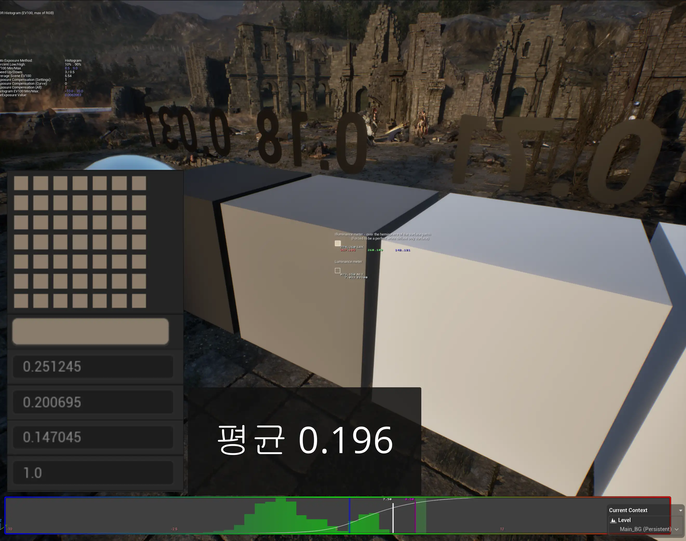
Mid tone 18% grey
조정
18% grey 값의 평균 0.19
03 — Challenges

01 · Texture Streaming
이슈
Render 했을 때 Texture LOD가 낮아지는 현상
시퀀스 전체에서 간헐적으로 캐릭터의 Texture LOD가 낮아져 영상이 튀어보이는 현상이 발생했다. MRQ 옵션에서 GameOverrides의 MoviePipelineGameMode를 켜주었음에도 LOD 문제가 발생했다.
→ Anti방식을 TSR, none 등 변경해보았고 GameOverrides의 Virtual Texture Feedback Factor를 off 해주었더니 좀 완화되었다. 검색결과
→ Factor가 클수록 → 피드백 버퍼 해상도가 낮음 → 연산 비용은 싸지만, 정확도가 떨어져서 필요한 텍스처 LOD를 못 잡고 더 낮은 LOD를 로드하는 경우가 생길 수 있음
→ Factor가 작을수록(=1에 가까울수록) → 피드백 버퍼가 더 정밀해짐 → 필요한 타일/밉을 더 정확히 잡아서 LOD가 간헐적으로 떨어지는 현상이 줄어들 가능성이 있음
→ MRQ가 강제로 적용하던 factor 값이 사라지고, 프로젝트 Rendering 세팅에 있는 기본값으로 돌아간 것, 끄는 순간 더 정밀한 기본 설정으로 돌아가 LOD 저하가 줄어든 것 같은 인과관계가 있는 것 같다.

02 · Render
이슈
영상의 앞 프레임 튀는 이슈
Anti를 2이상 올렸을 때, 앞에 한 프레임이 전 프레임과 겹쳐, 튀어보이는 현상이 발생했다. 여러 유저가 겪고있는 유명한 문제였다.
→ 해결법은 카메라가 포함되어있는 시퀀스 안에서 라이팅 시퀀스를 위치시켜주고 카메라 컷과 라이팅 시퀀스를 모두 앞으로 5~10프레임 늘려준 후 렌더한다. 모든 컷을 그렇게 진행하기엔 너무 비효율적이라 한 프레임씩 잘라가며 편집해주었다.
→ 나중에 알게 된 해결법은 MRQ에서 camera 옵션을 추가해주고 Shutter Timing을 Frame open을 하면 첫 번째 프레임이 전 시퀀스 마지막 프레임과 겹치지 않고 잘 렌더된다. 하지만 이것도 완벽한 해결방법은 아니다.
렌더하고자 하는 마지막 프레임이 그 다음 시퀀스랑 겹치게 되는 경우가 있다. 조삼모사 느낌.. 하지만 깔끔하게 렌더되는 경우가 있기 때문에 알고있으면 좋을 것 같다.

03 · Easyfog
이슈
Easyfog Flickering 이슈
Easyfog가 많아지니 Flickering 이슈가 발생했다.
→ directional light에 affect translucent Lighting을 off하면 사라지긴 하지만, fog 카드가 깊이감이 없어져서 문제가 있는 컷만 적용했다.
03 — Tests & Iterations
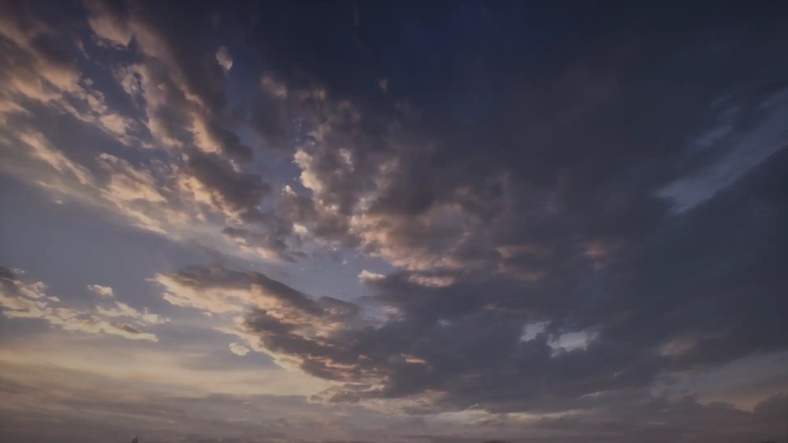
SKY
test
SkyBox Flowmap Asset
fab에서 구매한 Skybox asset을 사용했다.
→ 생각보다 퀄리티가 좋아서 시네마틱 영상에 무리없이 쓸 수 있었지만 남용하면 안될 것 같다. 자유도가 떨어지기도 하지만 깊이감이 부족할 수 있다.
04 — Notes
lighting의 channeling을 잘 활용해야 작업효율이 좋아질 것 같다. 언리얼은 Channel이 총 3개밖에 없다는 사실을 인지하고 어디에 어떤 Actor에 Channel을 부여할지 잘 설계하며 해야한다.
Light Actor에서 Rect,Point,Spot 여러 개를 써보며 그 위치에서 가장 좋은 Actor를 선택하는 감각을 길러야 할 필요가 있다. 데이터를 가장 많이 잡아먹는 Rect Light라고 Look이 꼭 좋으리란 법은 없으며 얼마든지 최적화하며 작업할 수 있다.
easyfog가 아주 획기적인 blueprint가 맞지만 중·근거리에서 많이 쓰다보면 꽤나 Flat해 보일 때가 있다. 근거리에선 꼭 퀄리티가 좋은 Niagara Smoke나 VDB를 적극 활용하는 편이 좋아보인다.